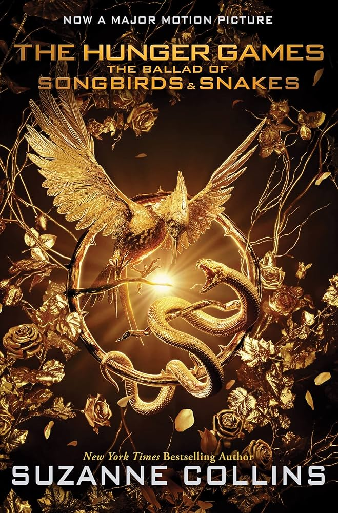

Sunrise on the reaping

As the day dawns on the fifieth annual Hunger Games, fear grips the districts of Panem. This year, in honor of the Quarter Quell, twice as many tributes will be taken from their homes. Back in District 12, Haymitch Abernathy is trying not to think top hard about his chances. All he cares about it making it through the day and being with the girl he loves. When Haymitch's name is called, he can feel all his dreams break. He's torn from his family and his love, shuttled to the Capitol with three other District 12 tributes: a young friend who's nearly a sister to him, a compulsive oddsmaker, and the most stuck-up girl in town. As the Games begin, Haymitch understands he's been set up to fail. But there's something in him that wants to fight...and have that fight reverberate far beyond the deadly arena.
"When you've been set up to lose everything you love, what is there to fight for?"
Ballad of Songbirds and Snakes

It is the morning of the reaping that will kick off the tenth annual Hunger Games. In the Capitol, eighteen-year-old Coriolanus Snow is preparing for his one shot at glory as a mentor in the Games. The once-mighty house of Snow has fallen on hard times, its fate hanging on the slender chance that Coriolanus will be able to outcharm, outwit, and outmaneuver his fellow students to mentor the winning tribute. The odds are against him. He's been given the humiliating assignment of mentoring the female tribute from District 12, the lowest of the low. Their fates re not completely intertwined - every choice Coriolanus makes could lead to favor or failure, triumph or ruin. Inside the arena, it will be a fight to the death. Outside the arena, Coriolanus starts to feel for Lucy Gray, his doomed tribut... and must weigh his need to follow the rules against his desire to survive no matter what it takes
"Ambition will fuel him. Competition will drive him. But power has its price."
Mockingjay Part 2

The success of the rebellion hingrd on Katniss's willingness to be a pwn, to accept responsibility for countless lives, and to change the course of th future of Panem. To do this, she must put her feelings of anget and distrust. She must become the rebels' Mockingjay -- no matter what the personal cost.
"My name is Katniss Everdeen. Why am I not dead? I should be dead."
Mockingjay Part 1

Katniss Everdeen, girl on fire, has survived, even though her home has been destroyed. There are rebels. There are new leaders, a revolution is unfolding. It is by design that Katniss was recued from the arena in the cruel and haunting Quarter Quell, and it is by design that she has long been part of the revolution without knowing it. District 13 really does exist, and now it has come out of the shadows and it plotting to overthrow the Capitol. Everyone, it seems, has had a hand in carefully laid plans -- except Katniss.
"My name is Katniss Everdeen. Why am I not dead? I should be dead."
Catching Fire

Against all odds, Katniss has won the Hunger Games. She and other fellow District 12 tributes Peeta Malark are miraculously still alive. Katniss should be relived, happy even. After all, she has returned to her family and her longtime friend, Gale. Yet nothing is the way Katniss wished it to be. Gale holds her at an icy distance. Peeta has turned his back on her completely. And there are whispers of a rebellion against the Capitol--a rebellion that Katniss and Peeta may have helped create. Much to her shock, Katniss has fueled an unrest she's afraid she cannot stop. And what scares her even more is that she's not entirely convinced she should try. As time draws near for Katniss and Peeta to visit the districts on the Capitol's cruel Victory Tour, the stakes are higher than ever. If they can't prove, without a doubt, that they are lost in their love for each other, the consequences will be horrifying.
"Sparks are igniting. Flames are spreading. And the capitol wants revenge"
The Hunger games

In the ruins of a place once known as North America lies the nation of Panem, a shining Capitol surrounded by twelve outlying districts. The Capitol is harsh and cruel and keeps the districts in line by forcing them all to send one boy and one girl between the ages of twelve and eighteen to participate in the annual Hunger Games, a fight to the death on live TV. Sixteen-year-old Katniss Everdeen regards it as a death sentence when she steps forward to take her sister's place in the Games. But Katniss has been close to dead before --and survival, for her, is second nature. Without really meaning to, she becomes a contender. But if she is to win, she will have to start making choices that weigh survival against humanity and life against love.
"Winning means fame and fortune. Losing means certain death. The Hunger Games have begun. . ."